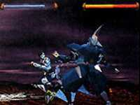

|

Review
Game Type: Depth Movement Brawler

A mix of Street Fighter and Double Dragon. The heroine runs along
and beats the crap out of hapless robots. She can jump between two or
three planes of the background a la Guardian Heroes, and has a few
Street Fighter-style special moves at her disposal.
Gameplay: 50/100
I'm rather disappointed. The control seems all right, and the
gameplay shows promise. But Zeiram Zone is one of those games that
strikes me as being only 90% finished, like it could use a bit more
tweaking. Some of the special moves don't seem to have quite the range
they should, you can get caught in the wrong spot and get beaten to
death by an enemy before you can even do anything, and some of the
bosses are cheap as hell. The code to let you play as any of several
enemies is a nice addition, but the basic gameplay is just too weak.
So close, yet so far...
Graphics: 50/100
The immediate reaction of those who know and love Iria from the
anime will be: "That isn't Iria." Well, it is, but this is a CG
representation of Iria from the live-action movie. (Again, I'm rather
disappointed.) Her rendering in the FMV sequences is of only passable
quality, but in the game she looks great. Her special moves are
enhanced with light trails, and the character animation is well
designed. Too bad many of the enemies don't look as good as she does.
The framerate and backgrounds could be better, too.
Sound: 70/100
The (non swap-friendly) music is hardly a masterpiece but it
complements the game nicely. The sound effects and voice samples are
of decent quality, too.
Overall: 50/100
I'd had some very high hopes for Zeiram Zone, but I'm afraid I
couldn't recommend purchasing it if it came out in the U.S., much less
importing it. There's just not enough substance here to make it worth
replaying.
Codes
- Play as Enemies
- At the Game Start/Option screen, highlight Game Start, do a 360
degree clockwise motion on the control pad, and press T. (It's all right
if the menu choice shifts, and you can repeat the sequence as often as
needed.) The Game Start option should turn red. Begin a game and a menu
should appear where you can select from several enemies to play as.
|